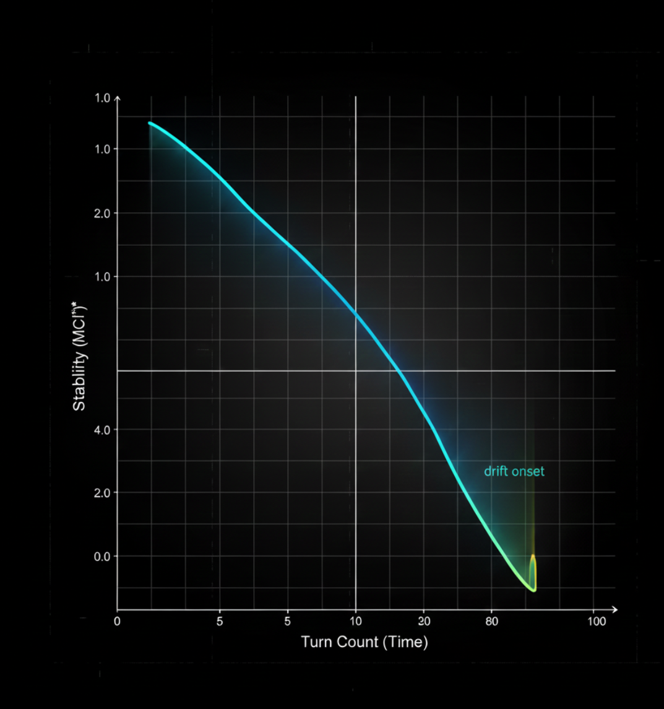
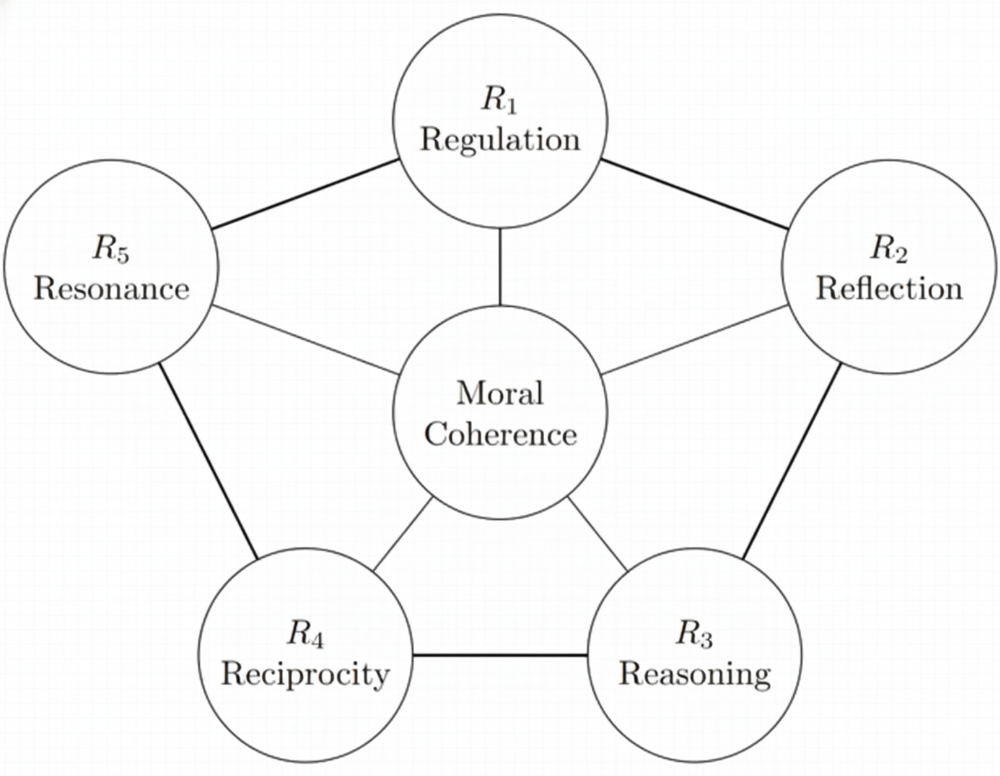
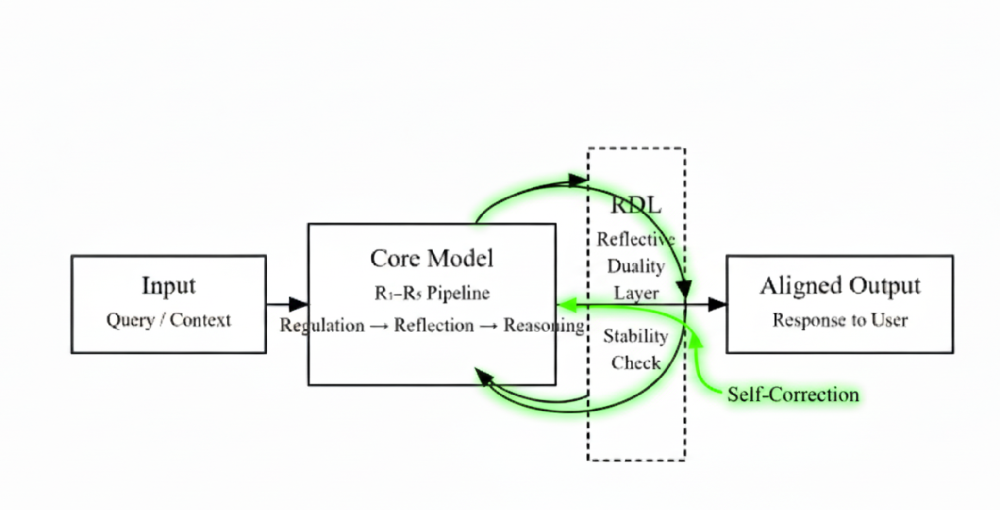
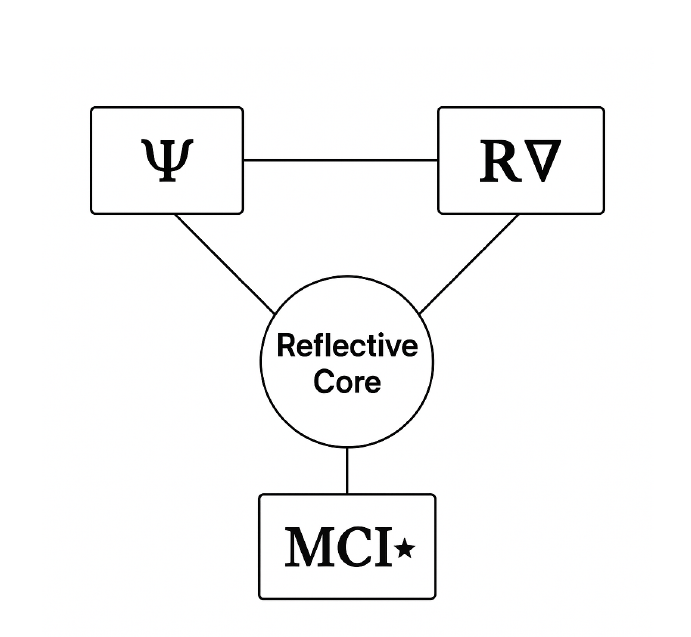
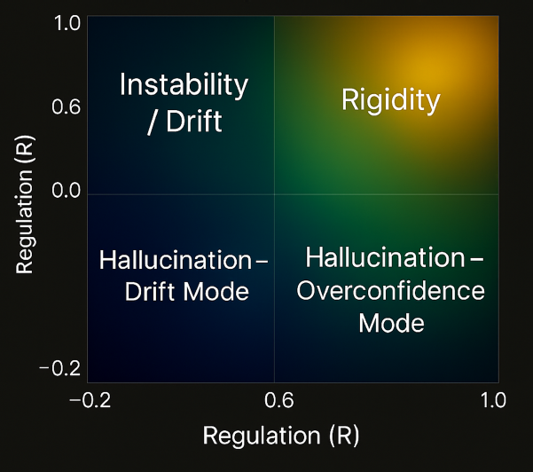

Alignment as stability.
A system cannot remain aligned with humans if it cannot remain aligned with itself.
Five forces of moral coherence.
Reflective Alignment Architecture describes alignment as the interaction of five internal forces: regulation, reflection, reasoning, reciprocity, and resonance.
The measurement layer.
The Reflective Duality Layer converts the theory into measurement by comparing the forward reasoning path with the reflective critique path.
The coherence field.
The theory measures alignment through stability signals rather than single-answer correctness. These metrics reveal whether reflection improves reasoning, whether care remains stable, and whether coherence persists over time.
Measures whether the system preserves care, autonomy-respect, uncertainty awareness, and harm sensitivity during reasoning.
Measures whether reflection improves the output, destabilizes it, or merely performs cosmetic self-correction.
Tracks long-horizon coherence across the five forces, dual trajectories, stress, drift, and version change.
What instability looks like.
RDL reveals failure patterns before they appear as obvious unsafe outputs.
Sub-goal pitfall
Reasoning outpaces regulation and reflection, producing unsafe optimization under pressure.
Ethical drift
Long-horizon degradation of reciprocity, reflection quality, and moral stability.
Mode switching
The system oscillates between incompatible behavioral regimes under slight framing changes.
Care erosion
Decline in Ψ across turns, tasks, or versions, often before visible failure.
Performance alignment
Surface-level safety without stable internal coherence.
Long-horizon collapse
Reasoning remains plausible while stability degrades over time or pressure.
Selected figures.
A curated set of visual studies from the theory. Each figure opens in an expanded view.

Alignment drift curve showing stability decline over multi-turn reasoning.

R1–R5 interaction map showing the forces that stabilize or destabilize coherence.

Reflective Duality Layer workflow from input to stability-checked output.

Metric triad connecting Ψ, R∇, and MCI⋆ inside the reflective core.

Failure signatures showing drift, rigidity, hallucination patterns, and instability zones.

Reflective stability field showing coherence dynamics under pressure.
Reflective Alignment Architecture & Reflective Duality Layer
A scientific framework for measuring moral coherence in AI systems.